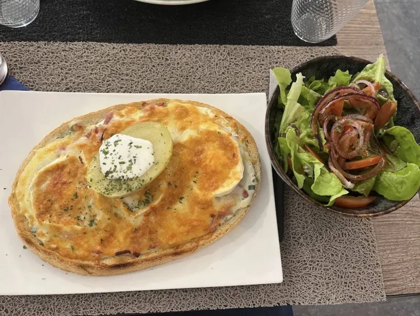
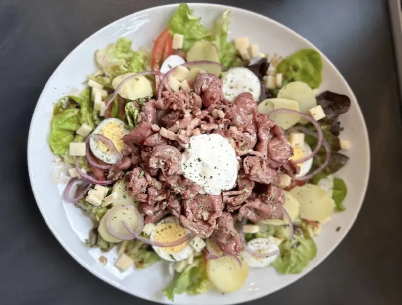

Nos Cafés
Des cafés soigneusement sélectionnés pour une tasse ronde, douce et élégante.
Café • Salon de thé • Gourmandises
Un café, salon de thé et crêperie au cœur de Bar-le-Duc. Café torréfié sur place, thés du monde sélectionnés à la tasse, crêpes sucrées et salées et pâtisserie maison : le temps s'arrête, la pause commence. de savourer chaque instant. Chez Les Douces Heures, on se pose, on échange, on déguste et on retrouve le plaisir simple d’un moment bien préparé.
Des cafés soigneusement sélectionnés pour une tasse ronde, douce et élégante.

Des infusions délicates et parfumées pour prendre le temps avec finesse.

Viennoiseries, pâtisseries et douceurs du jour pour accompagner chaque pause.

Notre histoire
Les Douces Heures est né de l’envie de proposer un café salon de thé à l’image de la ville: sincère, accueillant et attaché aux belles choses simples. Ici, on vient pour une tasse bien préparée, une gourmandise artisanale, un thé finement choisi, mais aussi pour s’accorder une pause loin du rythme trop pressé du quotidien.
Galerie



Informations pratiques
06 34 53 02 97
03 29 45 41 98